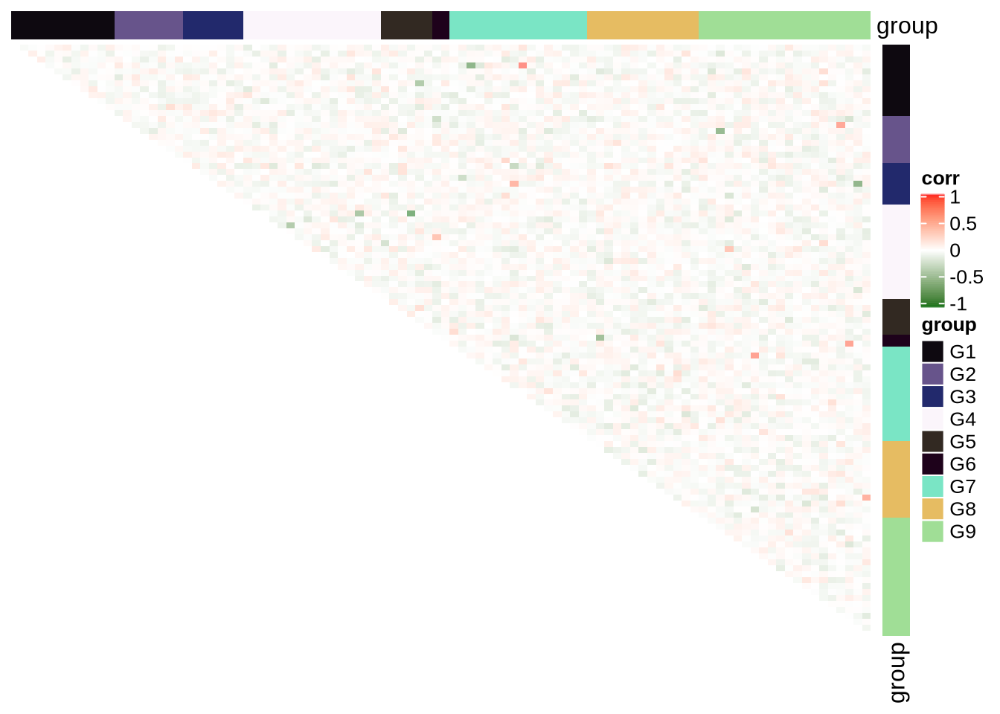
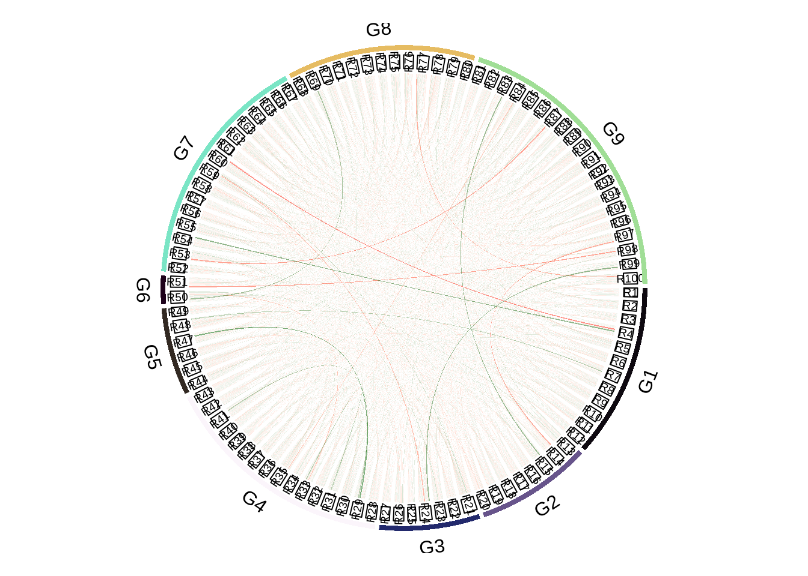

4 Methods
Methods
Hello, and thank you. 1
## $G1
## [1] "R1" "R2" "R3" "R4" "R5" "R6" "R7" "R8" "R9" "R10" "R11" "R12"
##
## $G2
## [1] "R13" "R14" "R15" "R16" "R17" "R18" "R19" "R20"## Loading required package: grid## ========================================
## ComplexHeatmap version 2.2.0
## Bioconductor page: http://bioconductor.org/packages/ComplexHeatmap/
## Github page: https://github.com/jokergoo/ComplexHeatmap
## Documentation: http://jokergoo.github.io/ComplexHeatmap-reference
##
## If you use it in published research, please cite:
## Gu, Z. Complex heatmaps reveal patterns and correlations in multidimensional
## genomic data. Bioinformatics 2016.
## ========================================## ========================================
## circlize version 0.4.8
## CRAN page: https://cran.r-project.org/package=circlize
## Github page: https://github.com/jokergoo/circlize
## Documentation: http://jokergoo.github.io/circlize_book/book/
##
## If you use it in published research, please cite:
## Gu, Z. circlize implements and enhances circular visualization
## in R. Bioinformatics 2014.
## ========================================
Goop 2

Goop 3
References
1. Xie Y. Dynamic documents with R and knitr [Internet]. 2nd ed. Boca Raton, Florida: Chapman; Hall/CRC; 2015. Available from: https://yihui.org/knitr/
2. Gu Z, Eils R, Schlesner M. Complex heatmaps reveal patterns and correlations in multidimensional genomic data. Bioinformatics 2016;
3. Gu Z, Gu L, Eils R, Schlesner M, Brors B. Circlize implements and enhances circular visualization in r. Bioinformatics 2014;30(19):2811–2.